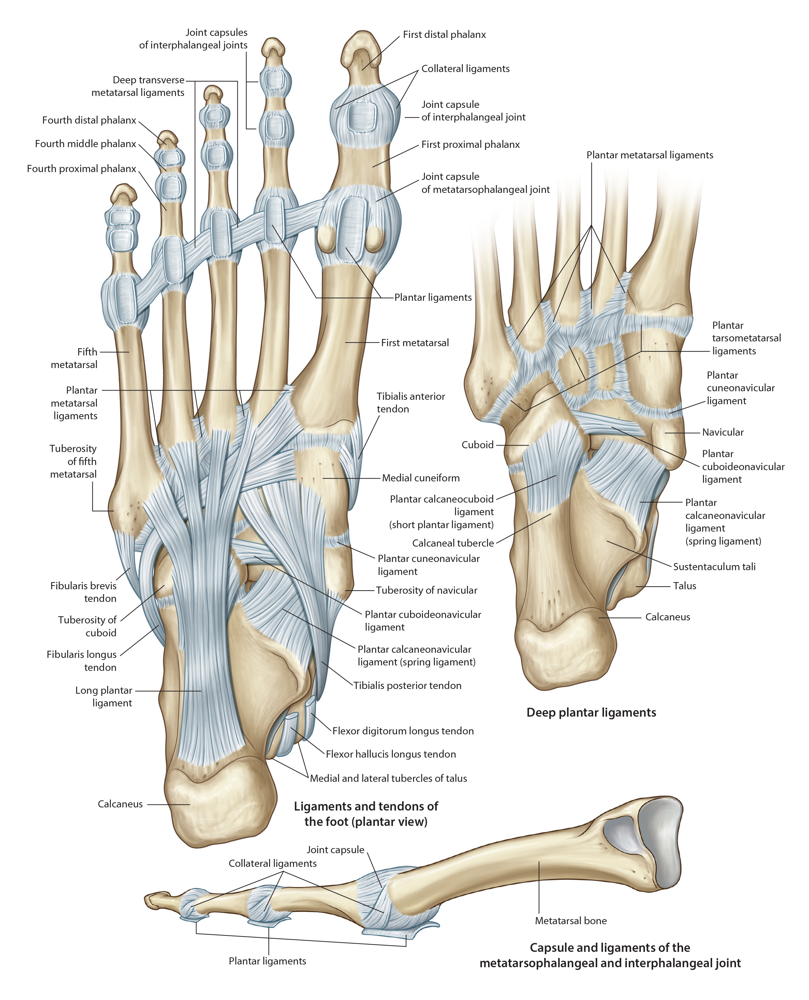

Lab 7 - Module 4 - The Foot: Page 2 of 8
×

Plantar Foot
|  |
| Tap on image to enlarge |
| Rotate to a view of the plantar foot. |
| The skin covering the sole (plantar) of the foot is much thicker than on the dorsum of the foot. The underlying subcutaneous tissue is more fibrous and creates fibrous septa (“skin ligaments) dividing this area, especially over the heel. The space between the fibrous septa are filled with fat to create a shock-absorbing pad. It is most well delevoped over the heel, which is the typical first area of impact during the gait cycle. Deep to the subcutaneous tissue is the thick band of tissue called the plantar fascia (similar to the palmar aponeurosis in the hand). The function of the plantar fascia is to hold parts of the foot together, protect the sole of the foot from injury, and support the longitudinal arches. Ligaments of the sole of the foot: 1. plantar calcaneo-navicular (spring ligament) 2. long plantar ligament 3. short plantar (plantar calcaneo-cuboid) |